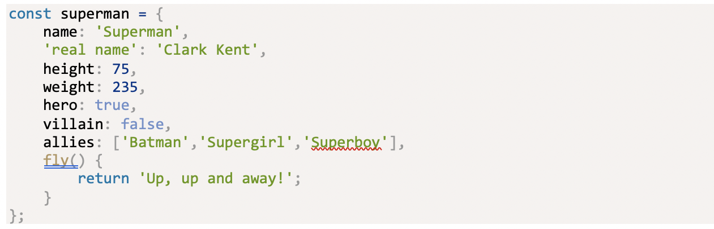

An Object in JavaScript is a self-contained of related values and functions. It stores value in key and value. An object literal is an object that is created directly by using the curly braces. An Example of Object Literal with method and attribute.
The keyword this refers to the object that is within. It can be used inside methods to gain access to the object’s properties. For Example:
const dice = {
sides: 6,
roll() {
return Math.floor(this.sides * Math.random()) + 1;
}
}
JSON = (JavaScript Object Notation) A lightweight data-storage format that is used by a large number of services for data serialization and configuration. It is used to exchange the information between web services. An example of JSON string representation:
const batman = '{"name": "Batman","real name": "Bruce Wayne","height": 74, "weight": 210, "hero": true, "villain": false, "allies": ["Robin","Batgirl","Superman"]}’
The Parse () Method takes a string of data in JSON format and returns a
JavaScript Object.
JSON.parse(batman);
<< { name: 'Batman',
'real name': 'Bruce Wayne',
height: 74,
weight: 210,
hero: true,
villain: false,
allies: [ 'Robin', 'Batgirl', 'Superman' ] }
The Stringify () method does the opposite, taking the JavaScript object and returning a string of JSON data
const wonderWoman = {
name: 'Wonder Woman',
'real name': 'Diana Prince',
height: 72,
weight: 165,
hero: true,
villain: false,
allies: ['Wonder Girl','Donna Troy','Superman'],
lasso: function(){
console.log('You will tell the truth!');
}
}
JSON.stringify(wonderWoman);
<< '{"name":"Wonder Woman","real name":"Diana Prince","height":72,
"weight":165,"hero":true,"villain":false,"allies":["Wonder Girl", "Donna
Troy","Superman"]}'
The Math object is a built-in object that has several properties representing mathematical constants. Importantly, all the properties and methods of the Math object are immutable and unable to be changed. They are all named CAPITAL for naming convention.
Math.PI // The ratio of the circumference and diameter of a circle
<< 3.141592653589793
Math.SQRT2 // The square root of 2
<< 1.4142135623730951
Math.SQRT1_2 // The reciprocal of the square root of 2
<< 0.7071067811865476
Math.E // Euler's constant
<< 2.718281828459045
Math.LN2 // The natural logarithm of 2
<< 0.6931471805599453
Math.LN10 // The natural logarithm of 10
<< 2.302585092994046
Math.LOG2E // Log base 2 of Euler's constant
<< 1.4426950408889634
Math.LOG10E // Log base 10 of Euler's constant
<< 0.434294481903251
The Maths.abs() method returns the absolute value of a number. So if the number is positive, it will remain the same, and if it’s negative, it will become positive.
Math.abs(3);
<< 3
Math.abs(-4.6);
<< 4.6
Math.ceil() method will round a number up to the next
integer, or remain the same if it is already an integer.
Math.ceil(4.2);
<< 5
Math.ceil(8);
<< 8
Math.ceil(-4.2);
Math.floor() method will round a number down to the next
integer, or remain the same if it is already an integer.
Math.floor(4.2);
<< 4
Math.floor(8);
<< 8
Math.floor(-4.2);
<< -5
Math.round()method will round a number to the nearest
integer. Math.round(4.5);
<< 5
Math.round(4.499);
<< 4
Math.round(-4.2);
<< -4
Math.trunc()method that returns the integer part of a
number. Math.trunc(4.9);
<< 4
Math.trunc(-4.2);
<< -4
Math.random()method is used to create random numbers,
whch an be very useful when writing programs. Calling the method will
generate a number between 0 and 1. Math.random();
<< 0.7881970851344265
If we want to generate a random integer, we can use the floor method that
removes the decimal part of the value. This will generate a random integer
between 0 and 5
Math.floor(6 * Math.random());
<< 4
A constructor function is used to create a new date object the new
operator
const today = new Date(); The variable today points to Date object. To see
the date we use. toString() method
today.toString();
<< 'Tue Feb 14 2017 16:35:18 GMT+0000 (GMT)'
A regular expression is a patternthat can be used to search string for
matches to the pattern.
const pattern = new RegExp('[a-zA-Z]+ing');
pattern.test('joke');
<< false
pattern.test('joking');
<< true
pattern.test('jokingly');
<< false
It allows to access elements of a webpage and enable interaction with the
page by adding and removing elements, changing the order, content and
attributes of elements, and even altering how they are styled. We can
Target the document by using ID, class, tagname, query and so on. The
classlist property is a list of all the classes an element has. The add
method can be used to add a class to an element without overwriting any
classes that already exist.
wonderWoman.classList.add('warrior');
The toggle method is a useful method that will add a class if an element
doesn’t have it already, and remove the class if it does have it. It
returns true if the class was added and flase if it was removed. For
Example;
wonderWoman.classList.toggle('hero'); // will remove
the 'hero'
class
<< false
wonderWoman.classList.toggle('sport'); // will add the 'hero' class
back
<< true
The contains method will check to see if an element has a particular
classs
wonderWoman.classList.contains('hero');
<< true
wonderWoman.classList.contains('villain');
<< false
A text node can be created using the document.createTextNode() method. It
takes a parameter which is a string containing the text that goes in the
node.
const flashText = document.createTextNode('Flash');
Screen X and ScreenY = shows the numer of pixels from the left and top of
the screen respectively where the event took place.
clientX and clientY = shows the number of pixels from the left and top of
the client that is being used (browser)
pageX and pageY = shows the number of pixels from the left and top, where
the event took place in the document. This property takes account of
whether the page has been scrolled.
function doSomething(event){
console.log(`screen: (${event.screenX},${event.screenY}), page:
(${event.pageX},${event.pageY}), client:
(${event.screenX},${event.screenY})`) }
When click on an element, we are acutaly clicking on all the elements it’s
nested inside of.